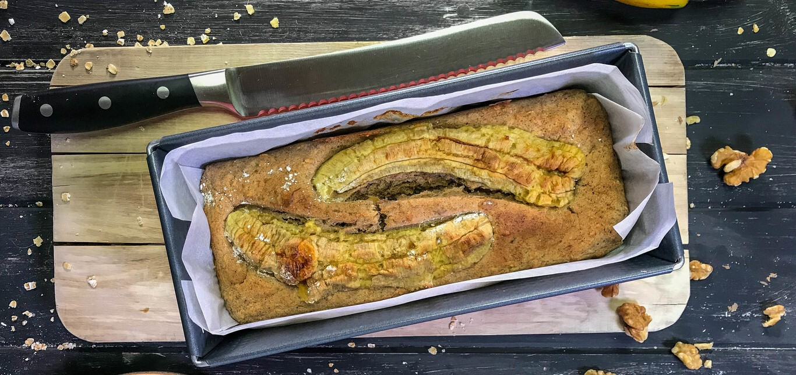
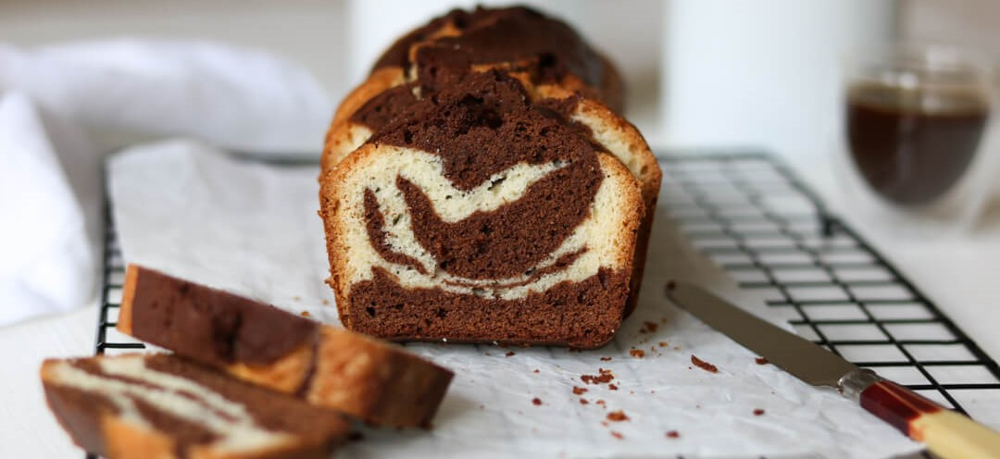
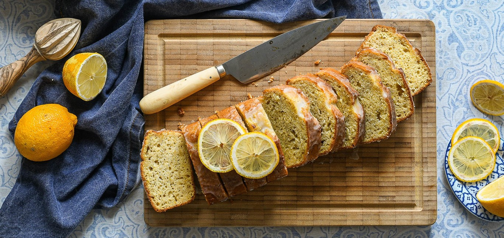
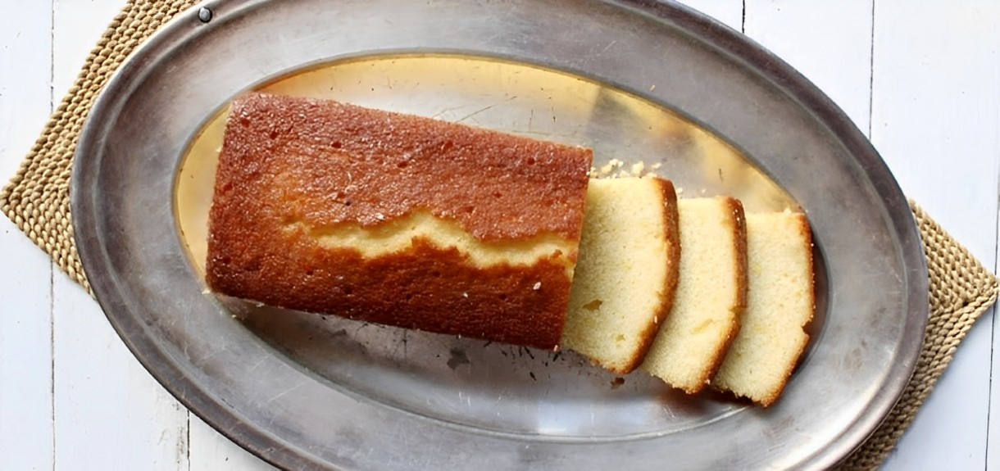

Bienvenido/a
Aquí tienes unas recetas sencillas para una merienda

Budin de Banana
Ingredientes:
- 2 bananas muy maduras
- 35 ml de aceite
- 125 gr de azúcar
- 1 huevo
- 1 cucharada postre de extracto de vainilla
- 200 gr de harina
- 1 cucharada de bicarbonato
- 50 gr de nueces peladas

Budin Marmolado
Ingredientes:
- 100 gr Manteca
- 200 gr Azúcar
- 3 Huevos
- 1 cda Esencia de Vainilla
- 200 gr Harina Leudante
- 30 gr Cacao Amargo
- 100 cc Leche

Budin de Limon
Ingredientes:
- 200 gr de manteca a temperatura ambiente
- 200 gr de azúcar
- 250 gr de harina 0000
- 1 cda de polvo de hornear
- Jugo de 1 limón
- 4 huevos medianos
- Ralladura de 2 limones

Budin de Vainilla
Ingredientes:
- 2 tazas de harina leudante
- 2 huevos
- 3/4 taza de azúcar
- 1/2 taza de aceite
- 2 chorritos leche
- Esencia de vainilla cantidad necesaria